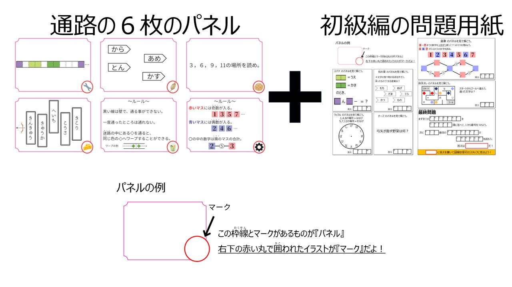
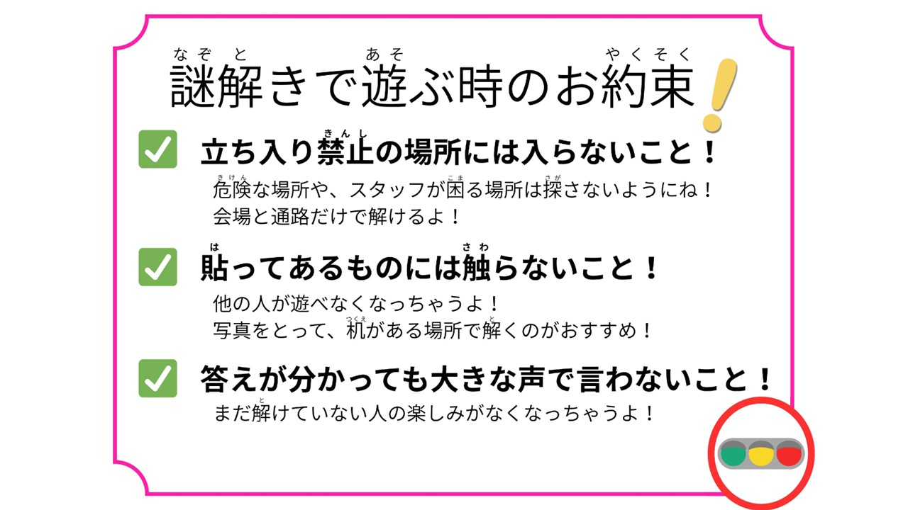
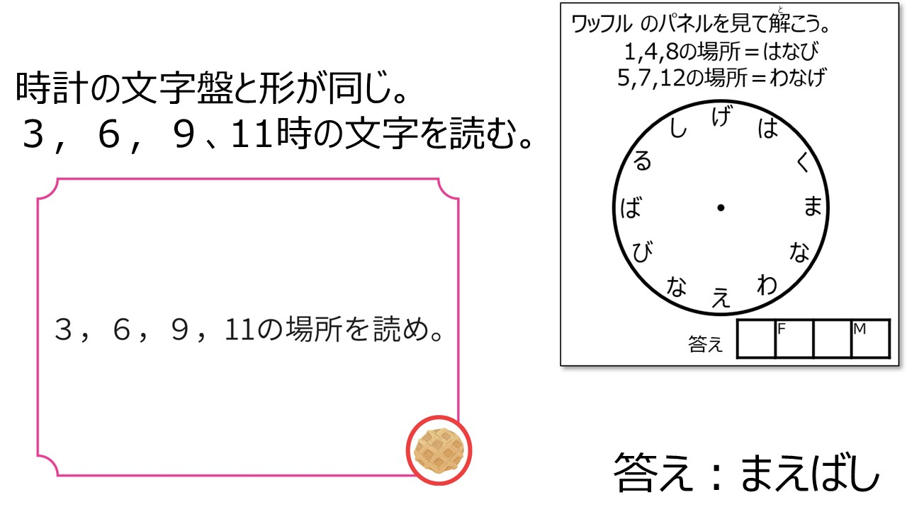

おや。
"隠された中級編"が見つかってしまいましたか……。
それでは中級編の解説をいたします。
お察しの通り、このサイトのURLには妙な点がありました。
初級編はlevel1、上級編はlevel3
であれば当然、level2が存在しているのではないか？と推測できます。
ヒントサイトからアクセスした先のURLをlevel2に書き換えるとこのようなサイトにたどり着けます。

もし初級編をクリアされていない場合はピンと来ないかもしれません。
通路には６枚のパネルがありました。
しかしもう一枚、あの会場にはパネルが存在していました。
それは会場受付のそばにあった「注意事項のパネル」でした。

では中級編の謎を解いていきましょう。
７枚目のパネルは「ちゅういじこう」のパネルでした。
文字数も合っています。対応する文字数番目を読んでいきましょう。

ということで「工事中」という答えを入力すれば、隠された中級編クリアとなりました。
まあ、あの納涼祭という限られた時間で辿り着ける人なんて皆無だと思いますが。
このサイトの存在に気づけただけでも相当に凄いと思います。
見つけていただき、ありがとうございました。
またこのような機会があれば、遊びに来ていただけますと幸いです。